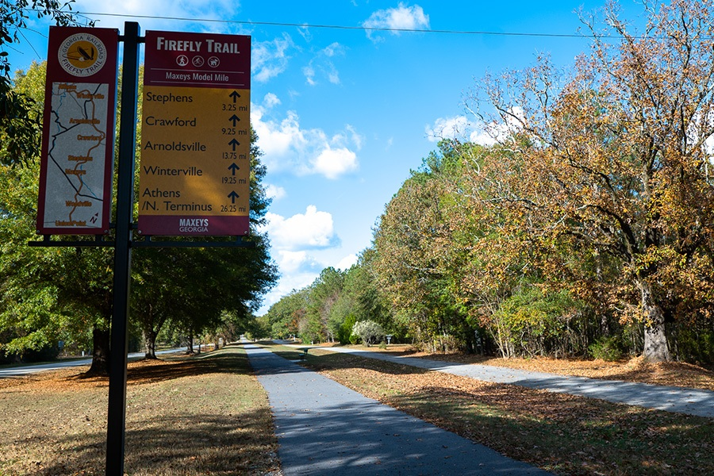

Maxeys Georgia is a hidden gem packed full of locals and activities.
From the famous Firefly Trail (model mile) to the local community center,
you will have endless locations to occupy your time.
With local restaurants only a 15 minute drive away, you have many local
amenities available on your trip away.
Must-See Spots
The Firefly Trail
Maxeys Veterans Park
Durham Apothecary & Museum
Maxeys Community Center
Gillen House Bed and Breakfast
Visitor Tips
If the town's only Bed & Breakfast is all booked up, consider staying in a different
town and driving in.
If all other accomodations are booked, consider staying at a campground.
Oconee River Campground is only a 10 mile hike away!
Bring your own backup water reserve on your trip! Depending on town water usage at
the time of your visit, the water pressure may drop drastically.
Consider scheduling your trip to align with a council meeting.

The Maxeys Firefly Trail, shown here, is a 1.4 mile long trail that is not
connected to the other sections of the Firefly Trail.
"This blog really helped me to find hidden gems! Who knew how many fun local
graveyards there were to visit?"